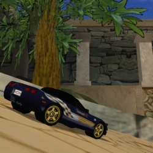
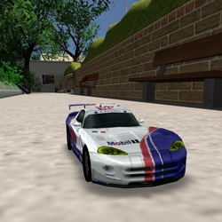
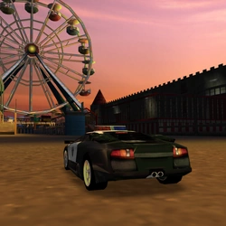

Corvette Indy 500 Pace Car
Nissan Stagea Autech 260RS
Isuzu VehiCROSS
☆DSL_Tile＋
Volkswagen Golf Variant
☆Skarma
Nissan Skyline Pursuit (Saitama)
Countach Pursuit
☆Citywalker, Skarma＋＋

Team Oreca Viper GTS-R

Lamborghini Murciélago Pursuit